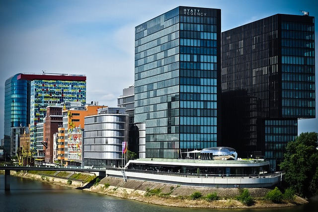

Die meistbesuchten Städte Deutschlands
Berlin
Die pulsierende Hauptstadt Deutschlands, die für ihre
lebendige Kunst- und Kulturszene, historischen Sehenswürdigkeiten
wie das Brandenburger Tor und ein aufregendes Nachtleben bekannt
ist.
Frankfurt
Das wirtschaftliche Herz Deutschlands, das für seine
beeindruckende Skyline, die Frankfurter Buchmesse und seine
internationale Finanzwelt bekannt ist.
Hamburg
Die Hafenstadt im Norden,
die für ihre einzigartige Architektur,
die Elbphilharmonie und eine maritime Atmosphäre
entlang der Alster und Elbe berühmt ist.
Mannheim
Mannheim, oft als "Stadt der Quadrate" bezeichnet,
besticht durch ihr einzigartiges Straßennetzwerk und das imposante
barocke Schloss Mannheim.
München
Die bayerische Metropole, die für ihr Oktoberfest,
prächtige Schlösser wie Nymphenburg und eine reiche Tradition in
Kunst und Wissenschaft berühmt ist.
Stuttgart
Die Stadt im Herzen von Baden-Württemberg, die für ihre
Automobilindustrie, das Mercedes-Benz Museum und malerische
Weinberge in der Umgebung geschätzt wird.

Düsseldorf
Die Mode- und Kunststadt am Rhein, die für die berühmte
Königsallee, lebhafte Kunstszene und exzellente Restaurants und
Bars gerühmt wird.
Leipzig
Die Stadt der Musik, die für das Thomaskirchenorchester,
das Bach-Museum und eine aufstrebende Kreativszene bekannt ist.